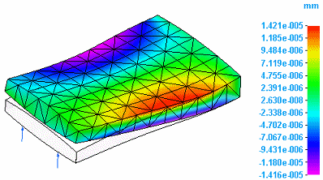
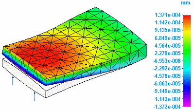
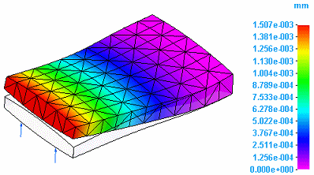
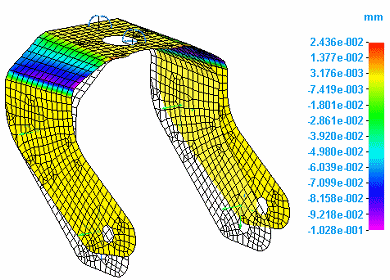
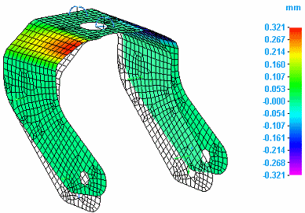
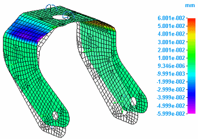
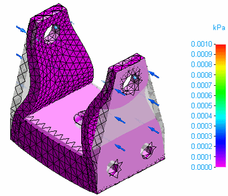
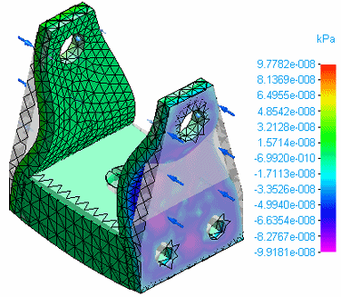
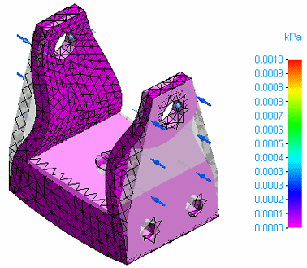

Displacement component plots
Displacement refers to the resultant movement of part geometry as a result of deformation due to applied loads and constraints. You can plot displacement in several ways:
-
You can plot the deformed model by itself.

-
You can plot the deformed model superimposed onto the undeformed model.

-
You can plot rotational deformation. Rotation refers to the resultant twisting of a part due to applied torques or rotational constraints.

When you select Displacement from the Result Type list in the Data Selection group, you can review the simulation results in any of the following displacement component plots:
The T1, T2, and T3 components of displacement are equivalent to the X, Y and Z axes in Solid Edge.
Displacement translation data plots
You can choose displacement component plots that show translation by selecting the following displacement data types from the Result Component list in the Data Selection group.
-
Total Translation
-
T1 Translation:

-
T2 Translation:

-
T3 Translation

Displacement rotation data plots
You can choose displacement component plots that show rotation by selecting the following displacement data types from the Result Component list in the Data Selection group.
-
Total Rotation
-
T1 Rotation

-
T2 Rotation

-
T3 Rotation

Applied force data plots
You can plot the effect on part geometry of an applied load, such as a force load. Select the following data types from the Result Component list in the Data Selection group.
-
Total Applied Force

-
T1 Applied Force

-
T2 Applied Force

-
T3 Applied Force

How do I
Plot resultsLearn more
Plotting resultsResult plots for mixed mesh models
Stress component plots
Constraint component plots
Strain component plots
Beam properties
Beam reaction component plots
Beam stress component plots
Beam diagrams
Temperature plots
Heat flux component plots
Applied temperature plots